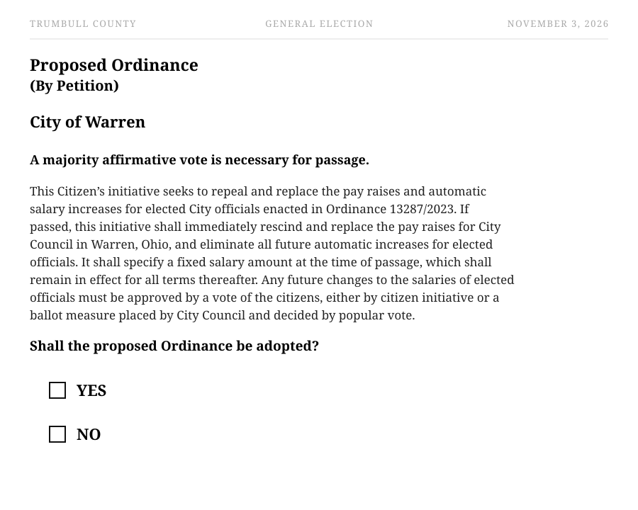
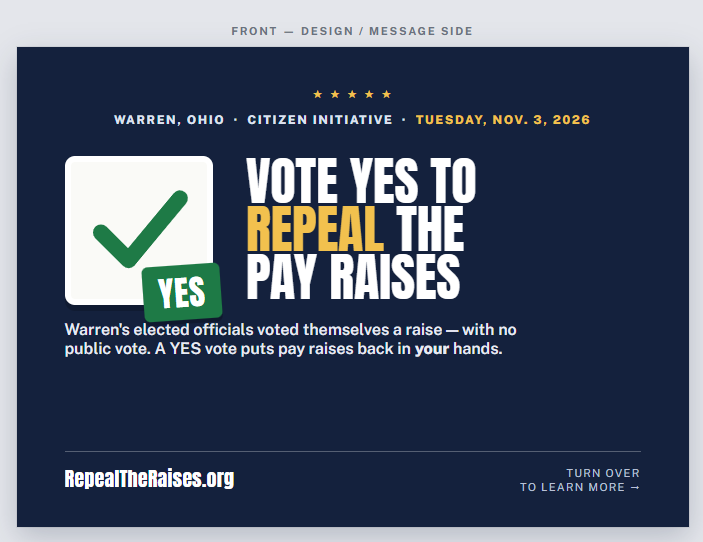

It's on the Ballot. Now We VOTE.
A YES Vote = Repeal the Raises.
On November 3, 2026, Warren voters decide whether City Council's automatic pay raises stand.
Vote YES to repeal them, set the salaries required by the citizen-petition ordinance, and put future raises back in the hands of voters.
Remember at the Ballot Box:
YES means Repeal. YES means Reform.
YES means politicians don't get to keep giving themselves raises without asking you first.
What a YES Vote Does on November 3
- Repeals and replaces the pay raises and automatic salary increases enacted in Ordinance 13287/2023.
- Sets the fixed salaries specified in the full ordinance text contained in the original citizen petition.
- Eliminates future automatic increases for elected officials.
- Requires voter approval for any future change to elected-official salaries.
This applies only to elected officials. It does not affect union contracts, collective bargaining, or the pay of city workers, police officers, or firefighters.
What It Will Look Like on the Ballot
This is the ballot summary voters will see for the November 3, 2026 General Election — Warren City (All Warren City):

ISSUE: Proposed Ordinance (By Petition)
QUESTION: Shall the proposed Ordinance be adopted?
Vote YES to Repeal & Reform.

Put Up a Repeal the Raises Sign
Want to show your neighbors how you’ll vote? Request a campaign sign by calling or texting 330-219-3564.
Request a Sign Print Sign PDF
Mansfield City Council members earn less than $10,000 annually. Warren City Council politicians make $20,765.92 per year — and Council gets paid $1,000 per meeting.
Current City of Warren Salaries
- Council makes $1,000 per meeting!!!
- $20,765.92 City Council + President of Council
- $20,765.92 Treasurer
- $103,829.65 Mayor
- $102,791.31 Law Director + Auditor
- $101,752.98 Safety Director
A councilman makes more for just 21 meetings than a 2,000 hour full-time worker makes in a year — and the raise was tied to the city's highest-paid employee, making future hikes automatic.
Frequently Asked Questions
Q: I'm confused — does YES or NO stop the raises?
A: YES stops the raises. A YES vote repeals and replaces the 2023 pay raise ordinance with the fixed salary terms written in the original petition and requires voters to approve any future change. A NO vote leaves the raises — and the automatic escalator — in place.
Q: Didn't we already sign a petition for this?
A: Yes. Over 1,000 Warren residents signed the Citizens' Initiative petition to put this question on the ballot. That effort succeeded — the measure is now certified for the November 3, 2026 general election. No additional petition signature is needed; now it comes down to votes.
Q: Is the short ballot summary the law?
A: No. The summary is the question voters decide. If YES wins, the full title and ordinance language in the original petition—not just the summary—is what is adopted into law.
Q: Is it true these raises were needed to give prosecutors in the law department a raise?
A: No. Warren City Council has granted raises to prosecutors and other city employees in the past without increasing their own salaries. This claim is misleading.
Q: Does this initiative affect union contracts or city employees?
A: No. It only affects elected officials—not union or city employees, police, or firefighters.
Q: How do Warren's elected official salaries compare to similar cities?
A: Council members in Warren make nearly 3 times more than those in Mansfield, Warren's "sister city" often used for comparison in police negotiations — more than the entire yearly pay of Mansfield council members even projected through 2028.
Q: Why did it take almost three years to get on the ballot?
A: Procedural delays. Organizers gathered the required signatures well ahead of schedule, but the measure faced repeated administrative hurdles before the Board of Elections certified it for the November 2026 ballot.
Q: What happens if I vote NO, or don't vote on this question at all?
A: The 2023 pay raise ordinance stays in effect, including the automatic annual increases tied to the city's highest-paid employee.
Every Vote Counts — Warren's Turnout Has Been Small
The 2025 primary election shows how few votes it can take to shape Warren's future — and how much a single ward's turnout matters:
| Ward | Issues R | Democratic Primary |
|---|---|---|
| Ward 1 | 61 | 369 |
| Ward 2 | 22 | 206 |
| Ward 3 | 83 | 815 |
| Ward 4 | 20 | 141 |
| Ward 5 | 54 | 494 |
| Ward 6 | 13 | 182 |
| Ward 7 | 30 | 213 |
| Total | 283 | 2,420 |
Only 2,420 people voted in the Democratic Primary across Warren's seven wards. On a general election ballot, this question could come down to a small number of votes — make sure yours is one of them. Vote YES on November 3, 2026.